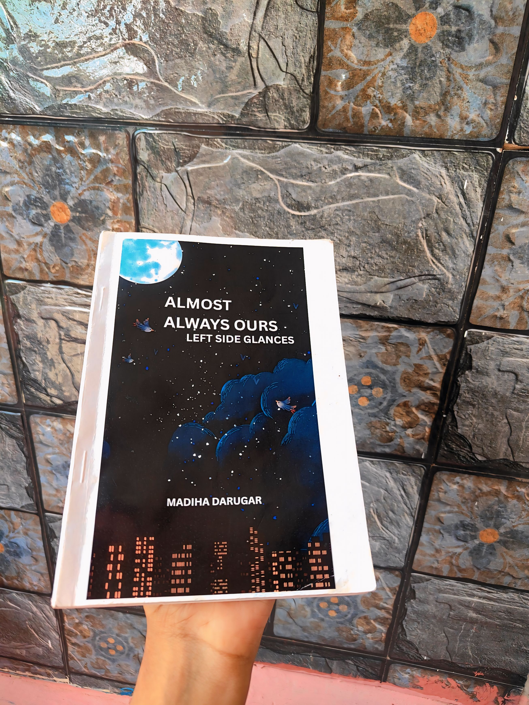

About Me
Hi, I’m Madiha Darugara.
I’m a Junior ML Engineer working on AI and machine learning systems for practical, real-world applications. My experience includes developing applied AI solutions across machine learning, NLP, document intelligence, and software-based AI systems.
I’m interested in exploring how intelligent systems can be designed, developed, and applied to solve meaningful problems. I enjoy working across both AI engineering and emerging research directions, from building practical systems to understanding how AI can be made more effective, reliable, and useful.
My academic and professional interests continue to evolve as I explore different areas of AI through projects, industry experience, and independent learning.
Junior ML Engineer
Education
G M Institute of Technology
B.E. in Artificial Intelligence and Machine Learning
2022 – 2025
CGPA: 8.53 / 10, First Class with Distinction. Completed academic coursework and projects across machine learning, artificial intelligence, natural language processing, and applied AI. Developed practical experience through technical projects involving machine learning models, intelligent applications, and AI-based problem solving.
Jain Polytechnic
Diploma in Computer Science Engineering
2019 – 2022
Percentage: 82.3%. Built a strong foundation in computer science, programming, software development, databases, and core computing concepts through coursework and technical projects.
Experience
HeavenDocs
Junior ML Engineer
Nov 2025 – Present
Working on AI and machine learning systems for property document intelligence and verification. Developing practical AI workflows involving document extraction, cross-document verification, inconsistency detection, and intelligent document analysis using machine learning, NLP, and document intelligence technologies.
Sookshmas Technologies
Java Full Stack Intern
Feb 2025 – May 2025
Worked on Java-based full-stack development and gained practical experience in application development, backend programming, database integration, and software development workflows.
Karunadu Technologies
AI/ML Intern
Nov 2023 – Dec 2023
Gained practical experience in artificial intelligence and machine learning through technical tasks involving machine learning concepts, model development, and applied problem solving.
Sirintel
Embedded Systems Intern
Apr 2022 – Jun 2022
Gained hands-on experience with embedded systems and hardware-oriented software development, building a foundation in programming and embedded technology.
Projects
Proplox
AI-Powered Property Document Verification & Legal Opinion Platform
Nov 2025 – Present
An AI-powered platform for property document verification and legal document analysis. The system extracts information from property documents, identifies inconsistencies across documents, and supports cross-verification using external legal and property data sources. The platform is currently being extended with RAG-based retrieval and AI agent workflows for intelligent document analysis and verification.
Technologies: Python · FastAPI · Machine Learning · NLP / Legal NLP · RAG · AI Agents · Google Document AI · PostgreSQL · pgvector · Landeed · Surepass · eCourts · RERA
ZivaCares
End-to-End Healthcare Appointment & Hospital Assistance Platform
2026 – Present
An end-to-end healthcare platform currently being developed for the local healthcare ecosystem in Davangere, Karnataka. The platform is designed to connect patients, hospitals, care assistance, and transport services through a unified digital healthcare workflow.
The platform supports hospital discovery, appointment booking, appointment passes, live queue tracking, hospital management, care assistance, transport and caretaker coordination, driver assignment, and payment workflows. A backend system and AI-powered patient assistance chatbot are also being developed as part of the platform.
Technologies: Next.js · React · JavaScript · Python · FastAPI · PostgreSQL · REST APIs · AI · NLP · Machine Learning
Key Features: Hospital Management · Appointment Booking · Live Queue Tracking · Care Assistance · Transport Coordination · Caretaker Management · Driver Assignment · Payment Workflow · AI Patient Assistance
Automated Notes Maker
Multilingual Speech-to-Text & AI Notes Generation
2025
A Python-based desktop application that transforms spoken and recorded audio into structured, actionable notes. The system supports real-time and batch speech transcription, multilingual translation, automatic summarization, and extraction of key insights from spoken content.
The application also provides audio editing, text-to-speech feedback, customizable transcription options, annotation, and export of generated content in formats such as PDF, DOCX, and TXT. It was designed to help students, professionals, and researchers capture and organize information more efficiently across multiple languages.
Technologies: Python · SpeechRecognition · NLTK · Googletrans · Pydub · Pyttsx3 · Speech-to-Text · NLP · Text-to-Speech · Audio Processing
Pandas vs. Penguins
CNN Image Classification
2024
A deep learning-based image classification project focused on distinguishing between pandas and penguins from images. The project involved image dataset preparation, preprocessing, image resizing and transformation, followed by the development and training of a Convolutional Neural Network (CNN) for automated image classification.
OpenCV was used for image processing and preparation, while TensorFlow and Keras were used to build and train the CNN model. The trained model was evaluated on image data and achieved over 90% classification accuracy, demonstrating effective performance in distinguishing the two animal classes.
Technologies: Python · TensorFlow · Keras · OpenCV · NumPy · Pandas · CNN · Deep Learning · Image Processing · Image Classification
Crime Prediction and Analysis
Machine Learning-Based Crime Prediction
2022
A machine learning project focused on analysing crime patterns and predicting crime categories using historical crime data from Chicago. The project involved data preprocessing, feature selection, data transformation, and analysis of crime-related attributes such as crime type, location, date, and time.
Machine learning classification techniques were explored to identify patterns in the dataset and predict crime categories. The project also included analysis and visualization of crime trends across different time periods and locations, providing insights into patterns within historical crime data.
Technologies: Python · Machine Learning · KNN · Decision Tree · Gradient Boosting · Pandas · NumPy · Scikit-learn · Data Preprocessing · Data Visualization
A Little Else About Me
Travelling is one of my favourite ways to experience the world beyond my everyday routine. I enjoy discovering unfamiliar places, experiencing different cultures, and noticing the little details that make each journey memorable.
When I am not exploring somewhere new, I enjoy dancing and writing. Dancing gives me a way to express myself freely, while writing allows me to turn thoughts and emotions into stories. I have written a book titled Almost Always Ours: Lefty Glances, which has been a meaningful part of my creative journey.
For me, travelling, dancing, and writing are ways to discover new perspectives, express myself, and collect experiences that stay with me long after the moment has passed.
Gallery
Here is a photo of my book.
